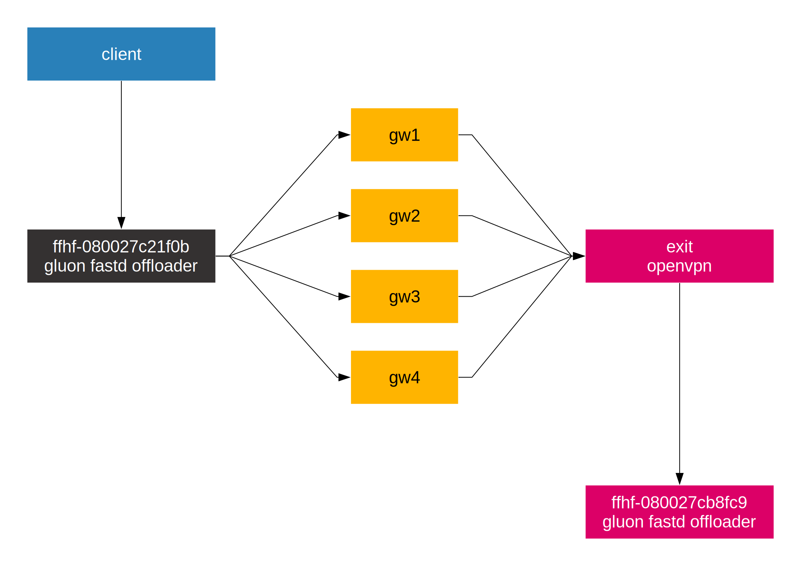
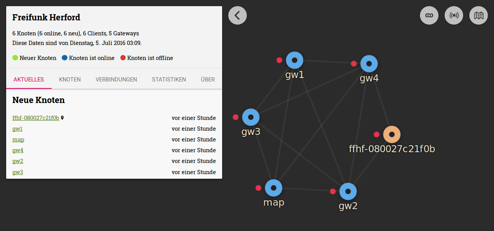
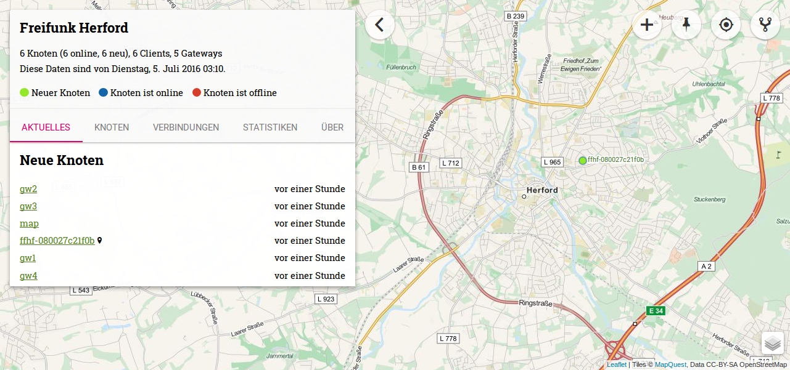

Testumgebung¶

Netzwerkdiagramm Testumgebung
Beispielausgabe von batctl o auf einem gluon Node.
[B.A.T.M.A.N. adv 2016.2, MainIF/MAC: mesh-vpn/72:85:7b:32:ea:38 (bat0 BATMAN_IV)]
Originator last-seen (#/255) Nexthop [outgoingIF]: Potential nexthops ...
02:42:0a:22:00:03 7.150s (250) 02:42:0a:22:00:03 [ mesh-vpn]: 02:42:0a:22:00:01 (213) 02:42:0a:22:00:03 (250)
02:42:0a:22:00:01 8.590s (250) 02:42:0a:22:00:01 [ mesh-vpn]: 02:42:0a:22:00:03 (216) 02:42:0a:22:00:01 (250)
02:42:0a:22:00:04 2.120s (150) 02:42:0a:22:00:03 [ mesh-vpn]: 02:42:0a:22:00:01 (147) 02:42:0a:22:00:03 (150)
02:42:0a:22:00:02 2.120s (183) 02:42:0a:22:00:03 [ mesh-vpn]: 02:42:0a:22:00:03 (183) 02:42:0a:22:00:01 (181)
Meshviewer auf dem Map Server in der Testumgebung.

Meshviewer Diagramm

Meshviewer OpenStreetMap
Testumgebung einrichten.¶
Todo: Pillar mit Testdaten in den Salt Master einbinden.